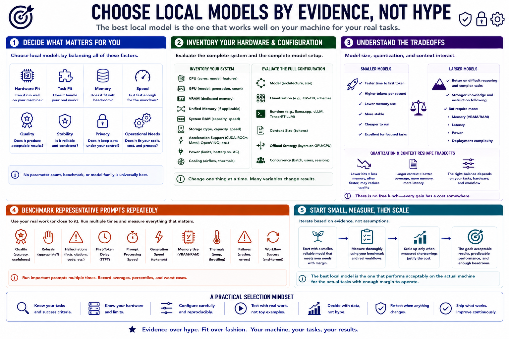

Course Summary and Key Takeaways
Connecting to LMS... Progress: in progress

Narration
Choose local models by hardware fit, task fit, memory, speed, quality, stability, privacy, and operational needs. No parameter count, benchmark, or model family is universally best.
Inventory CPU, GPU, VRAM, unified memory, system RAM, storage, acceleration support, power, and cooling. Evaluate the complete model, quantization, runtime, context, offload, and concurrency configuration.
Smaller models can be faster, stable, and excellent for focused work. Larger models may improve difficult tasks but increase memory, latency, power, and deployment complexity. Quantization and context reshape those tradeoffs.
Benchmark representative prompts repeatedly and record quality, refusals, hallucinations, first-token delay, prompt speed, generation, memory, thermals, failures, and workflow success.
Start with a smaller reliable model, then scale when measured shortcomings justify it. The best local model is the one that performs acceptably on the actual machine for the actual tasks with enough margin to operate.